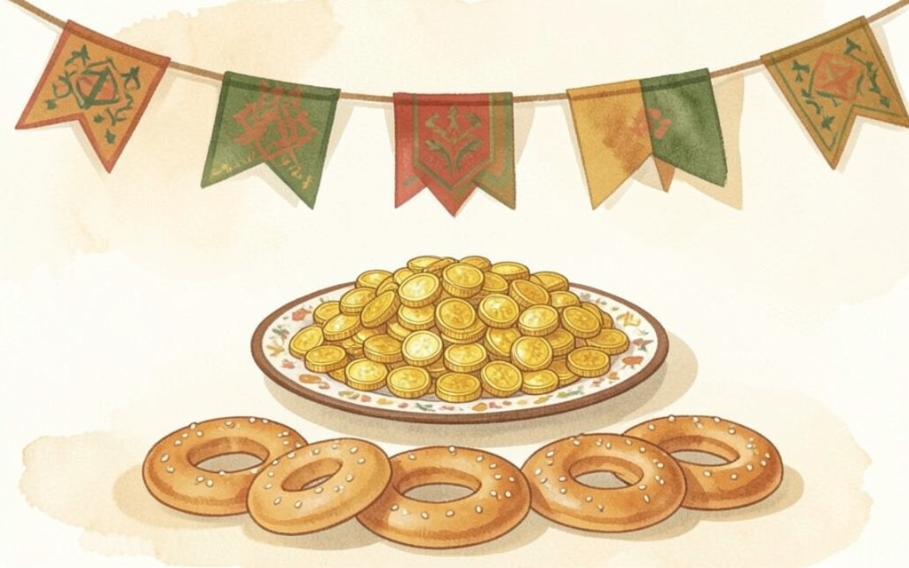
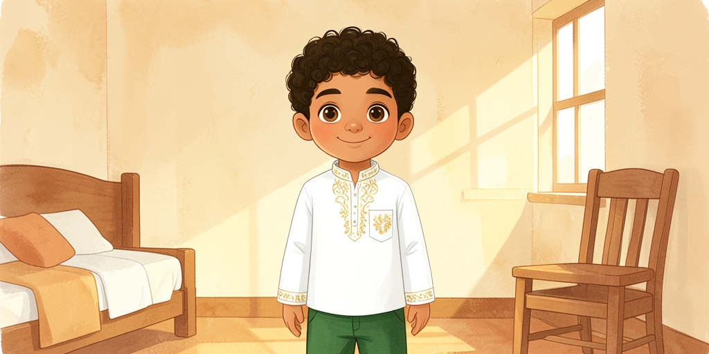
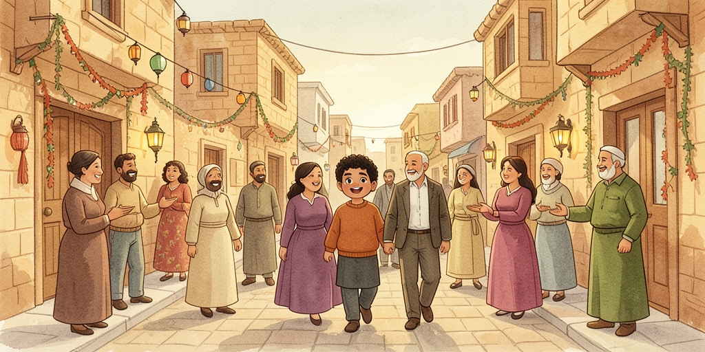
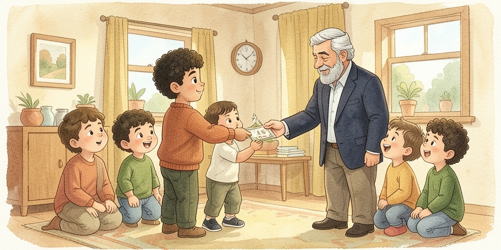
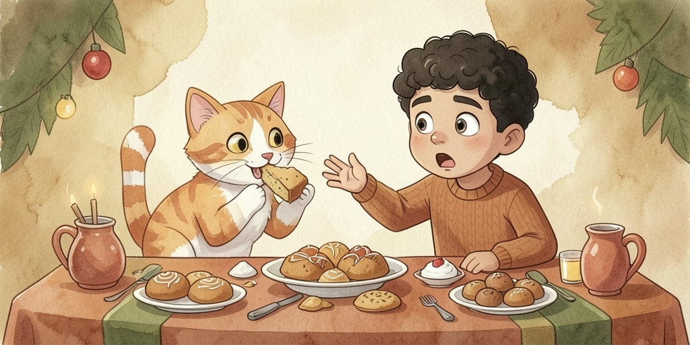
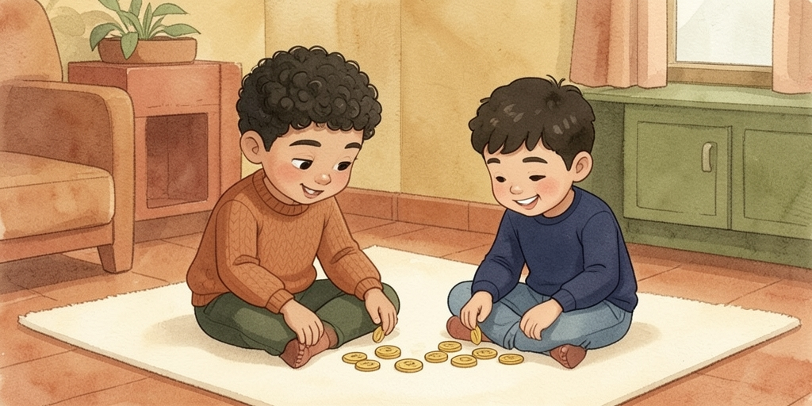
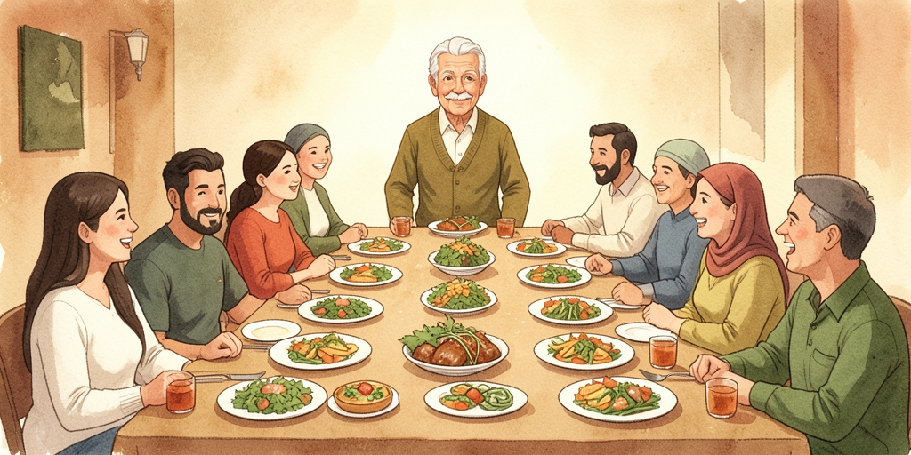
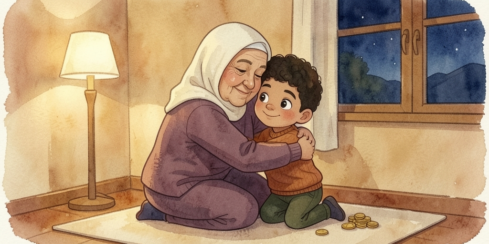

Eid morning at Sami's — new clothes, house-to-house visits, and عيدية. This book adds "if": the realistic إذا and the wishful لو, plus your first proper look at broken plurals.
| كل عام وانتو بخير | kill 3aam w-into bi-5eer | the Eid greeting, to more than one person |
| بألف خير | bi-alf 5eer | the standard reply |
| عيدية | 3eediyye | money given to kids at Eid |
| ضيوف | dyouf | guests · sg. ضيف deef |

الصبح بدري، فاق سامي قبل الكل وصرخ:
«تيتا! وين قميصي الجديد؟»
تيتا ضحكت من جوا المطبخ وقالت: «هناك، فوق الكرسي، يلا البسه بسرعة قبل ما يجوا الضيوف!»
سامي لبس القميص وقال:
«إذا لبست بسرعة، بدي روح أبارك عند عمي قبل الكل!»
Early in the morning, Sami woke before everyone and shouted: "Grandma! Where's my new shirt?" Grandma laughed from inside the kitchen and said: "There, on the chair, come on put it on quickly before the guests arrive!" Sami put on the shirt and said: "If I get dressed quickly, I want to go congratulate Uncle's family before everyone else!"

طلعوا كلهم عالشارع، وكل بيت كانوا يدقوا بابه ويقولوا:
«كل عام وانتو بخير!»
أهل البيت كانوا يردوا: «وانتو بألف خير! تفضلوا فطروا معنا.»
سامي كان يحب هالعادة كتير، لأنه بكل بيت في حلويات وناس مبسوطة.
They all went out onto the street, and at every house they'd knock on the door and say: "Every year and you're well!" The people of the house would reply: "And you a thousand times well! Come in, have breakfast with us." Sami loved this custom a lot, because at every house there were sweets and happy people.

عند بيت العم، البنات والولاد كلهم لفوا حوالين الكبار.
عمو مد ايده وعطى كل ولد وبنت عيدية، وقال: «كل عام وانتو طيبين يا حبايبي!»
سامي عد فلوسه بسرعة وقال لابن عمه:
«شفت؟ عندي عشر شواقل أكتر منك!»
At Uncle's house, all the girls and boys crowded around the grown-ups. Uncle held out his hand and gave every boy and girl eidiyye money, and said: "Every year and you're well, my dears!" Sami quickly counted his money and said to his cousin: "See? I have ten more shekels than you!"

عالطاولة كان في كعك وأصابع الست ومعمول محشي تمر وجوز.
سامي مد ايده ياخد وحدة، وفجأة شاف مشمش قاعدة فوق الطاولة بتاكل قطعة كعك!
صرخ: «مشمش! لأ! هاد مو الك!»
بس مشمش كانت أسرع منه وهربت بالقطعة.
On the table there was ka'ek, "lady's-finger" pastries, and ma'moul stuffed with dates and walnuts. Sami reached out to take one, and suddenly saw Mishmish sitting on the table eating a piece of ka'ek! He shouted: "Mishmish! No! This isn't yours!" But Mishmish was faster than him and ran off with the piece.

بعد ما زاروا كل الأقارب، قعدوا الولاد يعدوا مصاريهم مع بعض.
ابن عمه قال: «أنا جمعت أكتر منك! عندي خمسطعش شيقل زيادة!»
سامي فكر شوي وقال:
«طيب، بس لو جمعنا الاتنين مع بعض، رح يصير عنا مصاري كتير لنشتري لعبة كبيرة!»
After they'd visited all the relatives, the kids sat down to count their money together. His cousin said: "I collected more than you! I have fifteen shekels extra!" Sami thought for a moment and said: "Okay, but if the two of us put ours together, we'll have a lot of money to buy a big toy!"

عالغدا، اجتمعوا كل الأعمام والخالات والأصحاب حوالين طاولة طويلة.
كل واحد جاب شي: صحن منسف، وصحن سلطة، وصحن حلى.
سيدو رفع صوته وقال: «هلا وسهلا فيكم كلكم، الحمدلله ع السلامة والعيد!»
At lunch, all the uncles, aunts, and friends gathered around a long table. Everyone brought something: a plate of mansaf, a plate of salad, a plate of dessert. Grandpa raised his voice and said: "Welcome, all of you — thank God for your safety and happy Eid!"

بالليل، قعد سامي يعد كل مصاريه، وكانت كتير.
فكر وقال لتيتا: «تيتا، إذا وفرت هالمصاري، بقدر أشتريلك هدية بالعيد الجاي، مش هيك؟»
تيتا حضنته وقالت: «يا روحي، إنت الهدية. بس إذا بدك تفرحني، خليك دايما قلبك طيب متلما انت هلق.»
At night, Sami sat counting all his money, and it was a lot. He thought and said to Grandma: "Grandma, if I save this money, I could buy you a gift next Eid, right?" Grandma hugged him and said: "My darling, you are the gift. But if you want to make me happy, always keep your heart as kind as it is now."
Eid morning, greetings, and eidiyye.
| فاق | faaq | he woke up · يفوق yfuuq to wake up |
| قميص | qamiis | shirt |
| عادة | 3aade | a custom, a habit |
| بألف خير | bi-alf 5eer | "a thousand times well" — the reply to the Eid greeting |
| مد ايده | madd eedo | he held out his hand |
| عيدية | 3eediyye | money given to kids at Eid |
| عد | 3add | he counted · يعد yi3idd to count |
| شيقل | shiqel | shekel · pl. شواقل shawaakel |
| محشي | ma7shi | stuffed (with something) |
| هرب | hirib | he/she ran off, fled |
| أقارب | aqaarib | relatives |
| وفر | waffar | he saved (money) · يوفر ywaffir |
| منسف | mansaf | the rice-and-lamb dish, guest of honour food |
| رفع صوته | rafa3 sowto | he raised his voice |
| الحمدلله عالسلامة | il-7amdilla 3as-salaame | "thank God for your safety" — welcoming someone back |
| حضن | 7adan | he/she hugged · يحضن y7adin |
| فرح | farra7 | to make (someone) happy · تفرحني tfar7ini you make me happy |
| قلب طيب | qalb tayyeb | a kind heart |
| جاي | jaay | coming, next · العيد الجاي next Eid |
Two kinds of "if", and plurals that don't follow a formula.
إذا is for an "if" that could really happen:
إذا وفرت المصاري، بقدر أشتريلك هدية. iza waffart il-masaari, baqdar ashtriilek hdiyye.
If I save the money, I can buy you a gift.
لو is for wishful or unreal "if":
لو جمعنا الاتنين، رح يصير عنا مصاري كتير. law jama3na il-itneen, ra7 yiseer 3anna masaari kteer.
If we pooled the two together, we'd have a lot of money.
Notice both are followed by a verb in the past-tense form, even though nothing has happened yet — that's just how the sentence is built. Don't read it as an actual past.
Some plurals just add an ending (sound plurals). Most don't — the word for "many" reshapes itself (broken plurals), and there's no shortcut: you learn each one by ear.
| ولد ← ولاد | walad ← wlaad | boy(s) — broken |
| بنت ← بنات | bint ← banaat | girl(s) — sound |
| عم ← أعمام | 3am ← a3maam | uncle(s) — broken |
| خالة ← خالات | 5aale ← 5aalaat | aunt(s) — sound |
| صاحب ← أصحاب | saa7ib ← ashaab | friend(s) — broken |
| ضيف ← ضيوف | deef ← dyouf | guest(s) — broken |
| بيت ← بيوت | beet ← byout | house(s) — broken |
Drop the number straight in before أكتر من — no extra grammar needed:
عندي عشر شواقل أكتر منك. 3indi 3ashar shawaakel aktar minak.
I have ten shekels more than you.
| They say | |||
|---|---|---|---|
| كل عام وانتو بخير | kill 3aam w-into bi-5eer | said first, to a group | |
| بألف خير | bi-alf 5eer | the reply | |
| الحمدلله عالسلامة | il-7amdilla 3as-salaame | welcoming someone home |
Pick إذا or لو carefully — one of these is real, one is a daydream.
١) ____ زرتنا بكرة، بدنا نعملك قهوة. (a real possibility)
٢) ____ كان عندي طيارة، كنت طرت عالقمر. (pure daydream)
٣) ____ جمعنا فلوسنا، بنقدر نشتري لعبة. (a real possibility)
ضيف ← ______ بنت ← ______ عم ← ______
١) "Every year and you're well!"
٢) I have five shekels more than you.
٣) If you save your money, you can buy something nice.